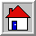

Поиск

Каталоги: интернет как библиотекаКаталог > Развлечения > Игры > Тамагочи (14)
| Компьютеры (2 315) Программы, Железо, Интернет… |
Развлечения (4 102) Игры, Юмор, Музыка… |
| Наука (980) Физика, Медицина… |
Новости и СМИ (612) Газеты, Радио, ТВ… |
| Образование (744) Школы, Вузы, Рефераты… |
Персональные страницы (8 731) |
Добавить свой сайт · заявки рассматриваются 2–6 недель
0 4 2 1 7
 Первые поисковики
Первые поисковики
Выберите систему:
 Тогда и сейчас
Тогда и сейчас
Яндекс, 20 апреля 2001 В архиве ↗
Сегодня
 Веб-кольца
Веб-кольца
 Кольцо любителей тамагочи
Кольцо любителей тамагочи

| | |